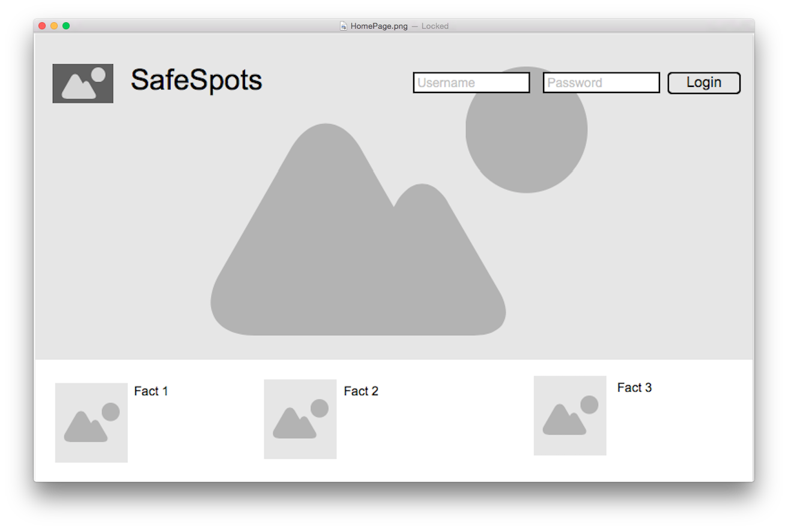
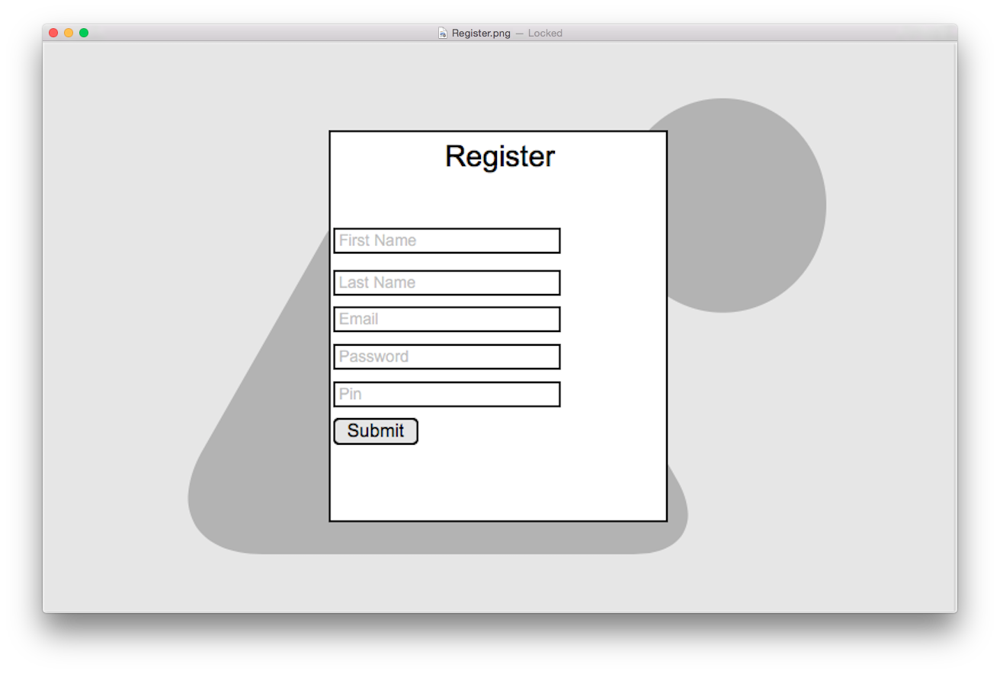
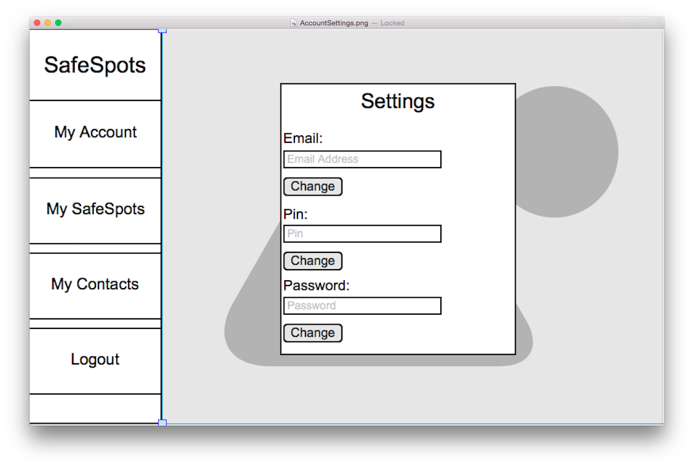
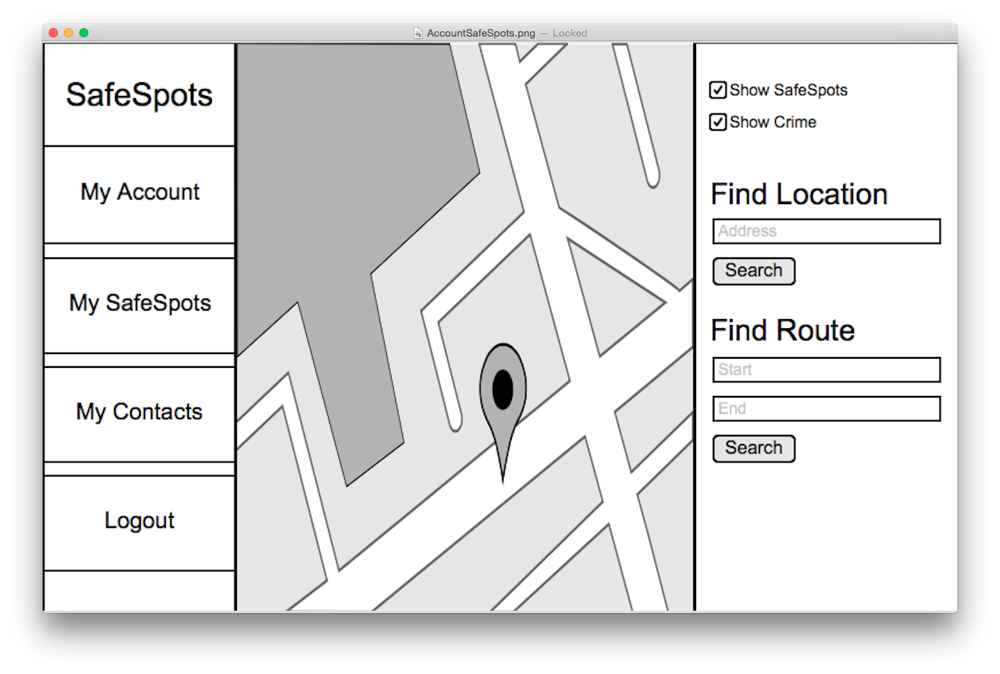
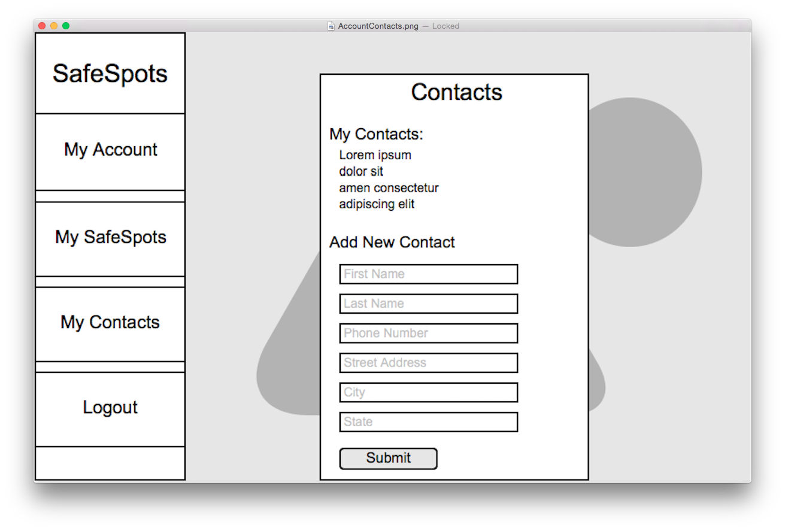
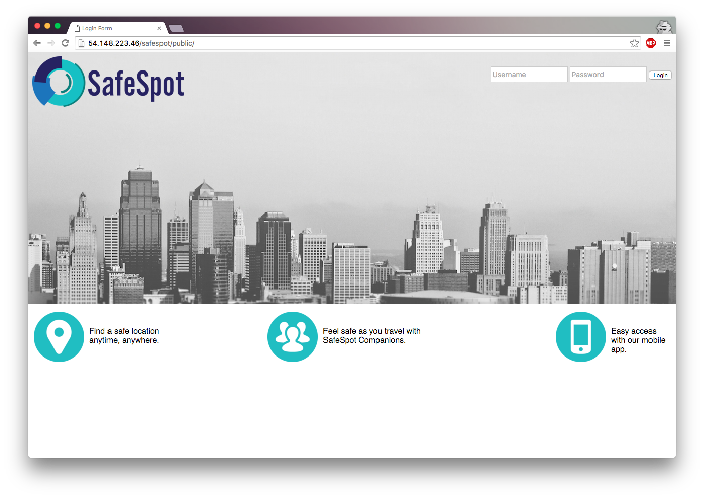
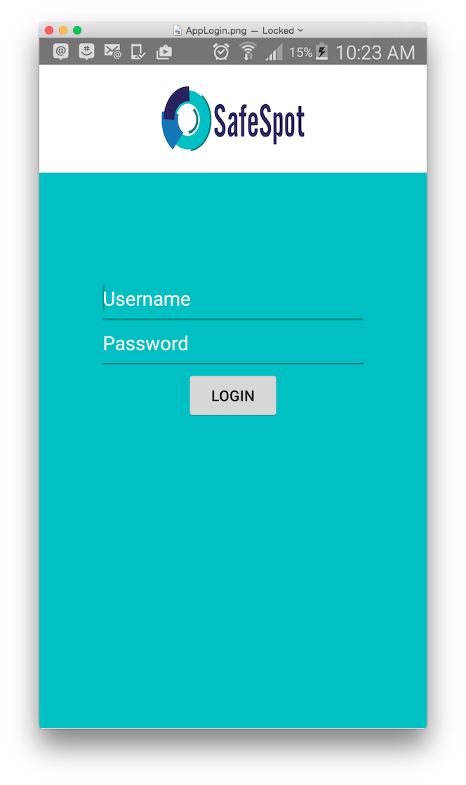
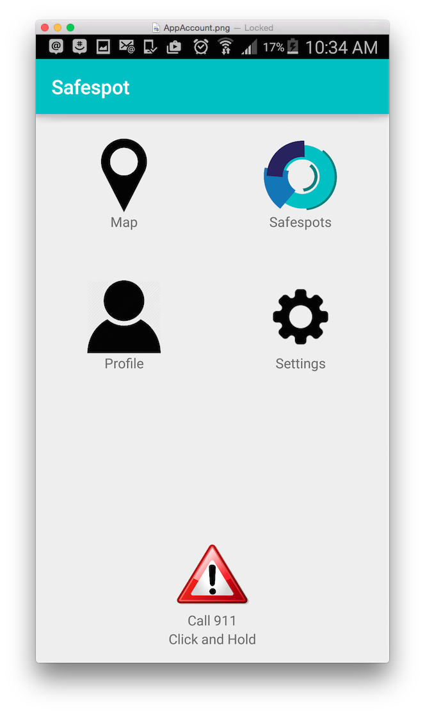
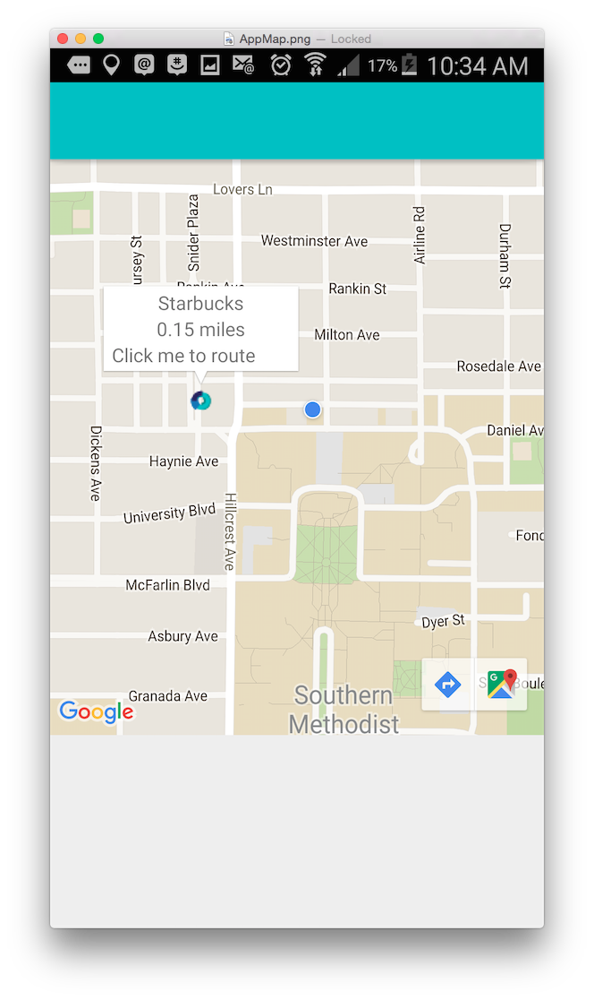

<!DOCTYPE html>
<html>

<head>
	<meta charset="utf-8">
	<meta http-equiv="X-UA-Compatible" content="IE=edge">
	<meta name="viewport" content="width=device-width, initial-scale=1">
    <title>Development Process</title>
	<link rel="stylesheet" type="text/css" href="css/acc_config.css">
	<link rel="stylesheet" href="css/tech.css">
	<link rel="stylesheet" href="http://maxcdn.bootstrapcdn.com/font-awesome/4.2.0/css/font-awesome.min.css">
	<link href='http://fonts.googleapis.com/css?family=Cookie' rel='stylesheet' type='text/css'>
    <script src="http://ajax.googleapis.com/ajax/libs/jquery/2.1.1/jquery.min.js"></script>
    <script src="js/acc_config.js" type="text/javascript"></script>
</head>

<body background = images/city2.jpg>
	<div class="wrapper">
	<aside class="sidebar-left">
		
		<div class="sidebar-links">
			<a class="link-lightteal" href="index.html"><i class="fa fa-home"></i>Back to Homepage</a>
			<a class="link-lightteal" href="about.html"><i class="fa fa-info-circle"></i>About Us</a>
			<a class="link-lightteal selected" href="development.html"><i class="fa fa-users"></i>Development Details</a>
			<a class="link-lightteal" href="technical-overview.html"><i class="fa fa-code"></i>Tech Specs</a>
			</aside>
	<div class="main-content">
		<h1>Development Process</h1>

		<h2>Our Initial Goals</h2>
		<p> Initially, we intended on making SafeSpot a crowdsource type application, where users would be able to write reviews over areas that they considered safe and even offer their own homes as potential areas. Unfortunately this raised several privacy and safety concerns, and we had to consider the possibility of users abusing this system to do harm to other users.</p>

		<h2>Implmented Features</h2>
		<h3>Features that made it to the final deliverable:</h3>
		<ul>
			<li>Login</li>
			<li>Pre-plan route</li>
			<li>Add/view Safespots</li>
			<li>Standard procedures to stay safe</li>
			<li>View local time stats</li>
			<li>Panic/Quick 911 (mobile)</li>
			<li>Auto-notify via text (mobile)</li>
		</ul>
		<p>*No additional features were implemented from our original idea</p>

		<h3>Features cut:</h3>
		<ul>
			<li>View "companion's" progress</li>
			<li>Read/write reviews of Safespots</li>
			<li>Global chat function</li>
		</ul>

		<h2>Inital Designs</h2>
		<h3>Website</h3>
		<div id="wireframes">
			
			
			
			
			
			
		</div>

		<h3>Mobile App</h3>
		<div id="wireframes">
			
			
			
		</div>

		<h2>Major Technical/Team Functioning Hurdles</h2>
		<p>For techincal hurdles we had some troubles finding APIs relevant to our application, specifically for the crime data side. In our research we had found a crime API that collected staatistical information of all crime in the area inputted. Unfortunately we didn't realize that this API only collected information for areas in the UK, thus we could not utilize it in our application. This delayed our progress on the crime features as we tried to find an alternature crime API that applied (at the very least) to the US. We eventually found the SpotCrime API, though it only showed summaries of recent crimes in the area.</p>
		<p> As for team functioning hurdles, initially the biggest issue we had was managaing time conflicts. Since we all had different course loads and other group projects to work on, it took a while to find a time for all of us to meet at. Once we began coding, the differences in our skill levels caused other problems, as some of us ended up not being able to put in as much work as others. Fortunately we were able to utilize everyone to the best of their abilities.</p>

		<h2>Major Features for v2.0</h2>
		<p>Version 2.0 would focus primarily on adding back features that allow users to keep in contect with friends/family while they travel.<p>
			<ul>
				<li>View "companion's" progress</li>
				<li>Global chat function</li>
			</ul>
    </div>
	<script>
		$(function () {
			var links = $('.sidebar-links > a');
			links.on('click', function () {
				links.removeClass('selected');
				$(this).addClass('selected');
			})
		});
	</script>
	</div>
</body>
</html>
